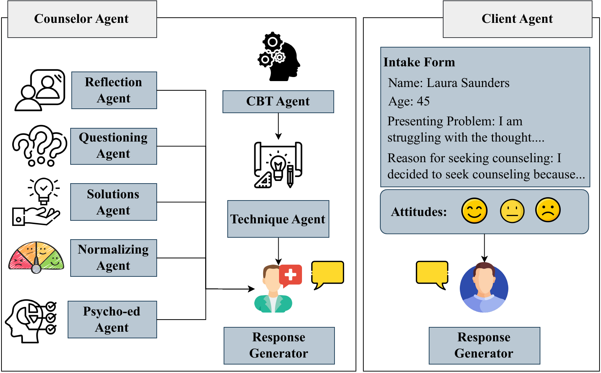

MAGneT achieves the highest score on every diversity metric, indicating that decomposing generation across specialized agents produces richer, less repetitive dialogue than a single-agent counselor.
The growing demand for scalable psychological counseling highlights the need for fine-tuning open-source Large Language Models (LLMs) with high-quality, privacy-compliant data, yet such data remains scarce. Here we introduce MAGneT, a novel multi-agent framework for synthetic psychological counseling session generation that decomposes counselor response generation into coordinated sub-tasks handled by specialized LLM agents, each modeling a key psychological technique. Unlike prior single-agent approaches, MAGneT better captures the structure and nuance of real counseling. We further address inconsistencies in prior evaluation protocols by proposing a unified evaluation framework integrating diverse automatic and expert metrics, expanding expert evaluation from four aspects of counseling in previous works to nine aspects. Empirically, MAGneT significantly outperforms existing methods in quality, diversity, and therapeutic alignment, improving general counseling skills by 3.2% and CBT-specific skills by 4.3% on average on the cognitive therapy rating scale (CTRS). Experts prefer MAGneT-generated sessions in 77.2% of cases on average across all nine aspects. Moreover, fine-tuning an open-source model on MAGneT-generated sessions shows better performance, with improvements of 6.3% on general counseling skills and 7.3% on CBT-specific skills on average on CTRS over those fine-tuned with sessions generated by baseline methods.

MAGneT generates clinically grounded, multi-turn synthetic counseling sessions by decomposing the counselor into a coordinated ensemble of LLM agents instead of asking a single model to "be a counselor."
Five agents each focus on one core counseling technique: Reflection, Questioning, Solution provision, Normalization, and Psycho-education. Each generates a candidate utterance, and a Response Generator fuses them into a single, coherent counselor turn.
A CBT Agent produces a session-level treatment plan once, at the start of the session. A Technique Agent then reads that plan alongside the dialogue history to dynamically select which of the five specialists to activate on every turn.
Seven licensed clinical psychologists compared MAGneT sessions against the strongest prior baseline and preferred MAGneT in 77.2% of cases on average across nine counseling aspects.
(1) A CBT Agent reads the client's intake form and opening turn and produces a session-level counseling plan, generated once per session.
(2) On every turn, a Technique Agent reads the plan and the dialogue history so far and selects a subset of the five specialized response agents to activate for that turn.
(3) The activated agents each generate a candidate counselor utterance, which a Response Generator fuses into a single, coherent counselor turn.
(4) A Client Agent, seeded with a structured intake form and one of three fixed attitudes (positive, neutral, negative), replies, and the updated dialogue history feeds back into the Technique Agent for the next turn. Sessions run for 40 turns.
Prior synthetic-counseling papers each reported a different subset of metrics, one used CTRS, another WAI, another PANAS, making methods difficult to compare head to head. MAGneT's evaluation combines Diversity (Distinct-n, EAD), CTRS, WAI, and PANAS with expert judgment on comprehensiveness, professionalism, authenticity, safety, content naturalness, directiveness, exploratoriness, supportiveness, and expressiveness.
| Method | CBT-grounded | Multi-agent | Diversity | CTRS | WAI | PANAS | Expert Eval. |
|---|---|---|---|---|---|---|---|
| SMILE | ✗ | ✗ | ✓ | ✗ | ✗ | ✗ | ✗ |
| Psych8k | ✗ | ✗ | ✗ | ✗ | ✗ | ✗ | ✗ |
| CPsyCoun | ✗ | ✗ | ✓ | ✗ | ✗ | ✗ | ✗ |
| Qiu and Lan (2026) | ✗ | ✗ | ✓ | ✗ | ✓ | ✗ | 1 aspect |
| CACTUS | ✓ | ✗ | ✓ | ✓ | ✗ | ✓ | 4 aspects |
| MAGneT (ours) | ✓ | ✓ | ✓ | ✓ | ✓ | ✓ | 9 aspects |
We compare the lexical diversity of sessions generated by Psych8k, CACTUS, and MAGneT using Distinct-n scores for n in {1, 2, 3} and the Expectation-Adjusted Distinct (EAD) score, which corrects Distinct-n's bias toward shorter sequences.
| Method | Distinct-1 | Distinct-2 | Distinct-3 | EAD |
|---|---|---|---|---|
| Psych8k | 0.0044 | 0.0570 | 0.1604 | 0.0546 |
| CACTUS | 0.0048 | 0.0619 | 0.1733 | 0.0537 |
| MAGneT | 0.0050 | 0.0685 | 0.2009 | 0.0562 |
MAGneT achieves the highest score on every diversity metric, indicating that decomposing generation across specialized agents produces richer, less repetitive dialogue than a single-agent counselor.
We assess counseling quality with the Cognitive Therapy Rating Scale (CTRS, scored 0 to 6) and therapeutic alliance with the Working Alliance Inventory (WAI, scored 1 to 7), both rated by GPT-4o as an LLM judge across sessions generated by Psych8k, CACTUS, and MAGneT.
| Method | CTRS, general | CTRS, CBT-specific | WAI | ||||||
|---|---|---|---|---|---|---|---|---|---|
| Underst. | Interp. eff. | Collab. | Guided disc. | Focus | Strategy | Task | Goal | Bond | |
| Psych8k | 3.90 | 4.10 | 3.13 | 3.80 | 3.35 | 2.59 | 4.86 | 4.73 | 4.93 |
| CACTUS | 3.84 | 3.94 | 3.09 | 3.74 | 3.37 | 2.83 | 4.69 | 4.39 | 4.65 |
| MAGneT | 3.98 | 4.30 | 3.43 | 4.08 | 3.76 | 2.93 | 4.94 | 4.78 | 5.01 |
MAGneT improves general counseling skills by 3.2% and CBT-specific skills by 4.3% on average on CTRS over the strongest baseline, and achieves the highest WAI scores on Task, Goal, and Bond. On PANAS, MAGneT induces the largest positive-emotion shift for positive- and neutral-attitude clients, though like CACTUS it trails slightly on negative-attitude clients.
We fine-tune Llama3-8B-Instruct separately on the (dialogue history, counselor response) pairs from sessions generated by Psych8k, CACTUS, and MAGneT, then evaluate each fine-tuned model on held-out client profiles using CTRS.
| Fine-tuned on | CTRS, general | CTRS, CBT-specific | ||||
|---|---|---|---|---|---|---|
| Underst. | Interp. eff. | Collab. | Guided disc. | Focus | Strategy | |
| Psych8k | 3.71 | 3.83 | 2.91 | 3.65 | 3.16 | 2.44 |
| CACTUS | 3.48 | 3.67 | 2.65 | 3.37 | 2.99 | 2.45 |
| MAGneT | 3.95 | 4.32 | 3.32 | 4.03 | 3.60 | 2.96 |
Llama-MAGneT improves general counseling skills by 6.3% and CBT-specific skills by 7.3% on average on CTRS over the strongest baseline. Ablations show that removing the Technique Agent degrades both general and CBT-specific CTRS broadly, showing dynamic technique selection matters across the board, while removing the CBT Agent has little effect on Understanding or Interpersonal Effectiveness but sharply hurts Guided Discovery and Focus, the two skills most dependent on a session-level plan. Removing both agents gives the lowest scores of any ablation.
@misc{mandal2025magnetcoordinatedmultiagentgeneration,
title={MAGneT: Coordinated Multi-Agent Generation of Synthetic Multi-Turn Mental Health Counseling Sessions},
author={Aishik Mandal and Tanmoy Chakraborty and Iryna Gurevych},
year={2025},
eprint={2509.04183},
archivePrefix={arXiv},
primaryClass={cs.CL},
url={https://arxiv.org/abs/2509.04183},
}